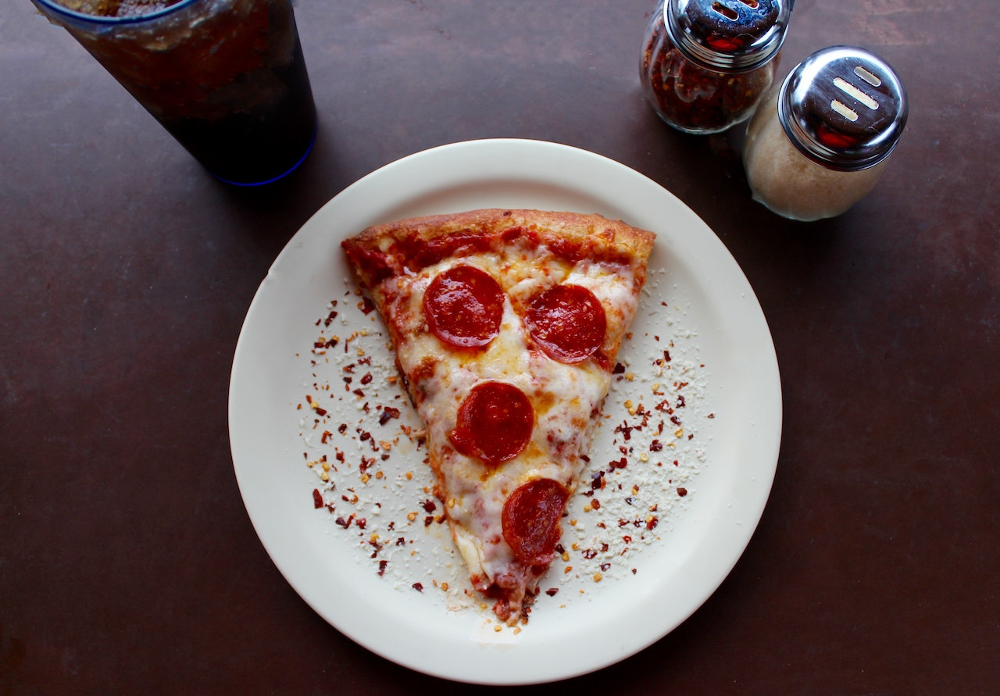

Pepperoni Pizza

Description
This pepperoni pizza recipe produces a quick and easy classic!
Delicious homemade pizza crust and tomato sauce have never been easier.
Total time: 40 minutes, Servings: 6
Steps
- Preheat the oven to 425 degrees F (220 degrees C). Grease two 12-inch pizza pans.
- Make sauce: Whisk together water, tomato paste, oregano, basil, garlic powder, onion powder,
sugar, salt, and pepper in a medium bowl until smooth. Set aside.
- Transfer dough to a floured surface; knead until dough is smooth and elastic, about 4 minutes.
Add more flour as needed. (If using RapidRise yeast, let dough rest, covered, for 10 minutes.)
- Transfer dough to a floured surface; knead until dough is smooth and elastic, about 4 minutes.
Add more flour as needed. (If using RapidRise yeast, let dough rest, covered, for 10 minutes.)
- Divide dough in half. Lightly flour your hands, then pat each piece of dough onto the prepared pizza
pans.
- Top dough with sauce, cheese, and pepperoni.
- Bake in the preheated oven until crusts are browned and cheese is bubbly, 18 to 20 minutes. Rotate
pizza pans between the top and bottom oven racks halfway through baking.